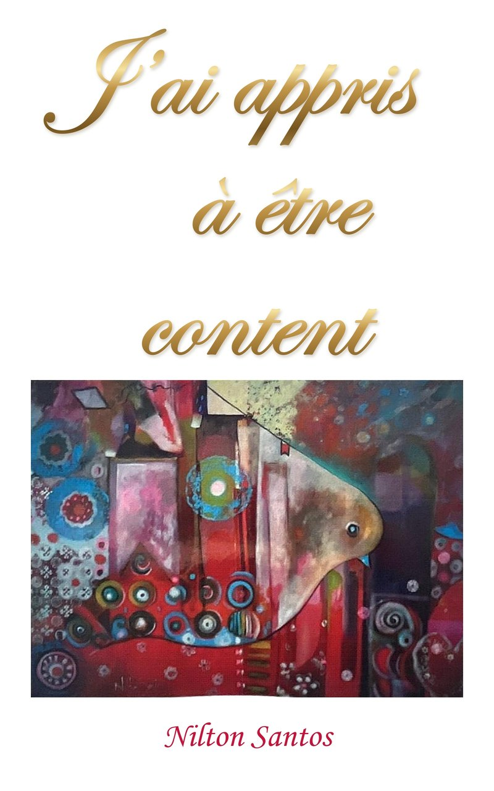

Le secret de Paul pour une vie libre, autonome et pleine de joie
Traduit du portugais (Brésil) — titre original : Aprendi a Estar Contente
Lire sur Kindle — 3,99 €En prison, dans le froid et la faim, l'apôtre Paul écrit : « J'ai appris le secret d'être content en toute situation. » Quel est ce secret ? Ni la résignation, ni un sourire de façade, mais une liberté intérieure que rien ni personne ne peut nous prendre.
Psychologue, thérapeute familial et pasteur, Nilton Santos accompagne depuis des années des personnes et des familles blessées. Dans ce livre direct et chaleureux, il montre que le mot grec traduit par « content » signifie aussi autonomie : la capacité de gouverner sa vie avec Dieu, au lieu de la remettre entre les mains des autres.
Un livre court et lumineux pour ceux qui veulent cesser de dépendre du regard des autres, guérir de la déception et retrouver, en Dieu, une joie qui ne dépend plus des circonstances.
« Nul ne peut être content à ta place. Décide donc d'être heureux. »
« J'ai appris à être content de l'état où je me trouve. […] Je puis tout par celui qui me fortifie. » — Philippiens 4:11-13 (Louis Segond)
Pour ceux qui traversent une déception, une perte ou une crise et n'arrivent pas à se relever. Pour ceux qui vivent suspendus à l'approbation des autres, ou dont le bonheur dépend entièrement d'une personne. Pour les couples et les parents qui veulent construire une famille non pas parfaite, mais saine.
L'édition française est disponible en ebook Kindle. L'édition originale existe en portugais.
Édition française (Kindle) Edição portuguesa Retour au catalogue